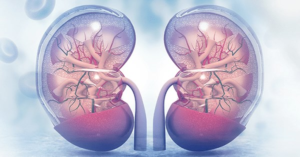
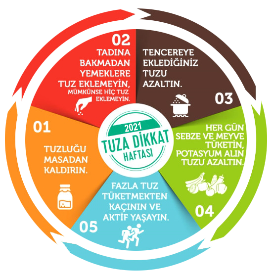

11 MART DÜNYA BÖBREK GÜNÜ
Kronik böbrek hastalığı, tüm dünyada yoğun olarak görülen önemli bir halk sağlığı sorunudur. Dünya erişkin nüfusunun yaklaşık % 10'nda böbrek hastalığı bulunduğu tahmin edilmektedir.
Türkiye’de erişkinler arasında yapılan araştırmalarda bu oran biraz daha yüksek olup, % 15,7 oranında çeşitli evrelerde böbrek hastalığı bulunduğunu gösterilmiştir.
KISACA ÜLKEMİZDE HER 7 KİŞİDEN BİRİSİNDE KRONİK BÖBREK HASTASIDIR!
Kronik böbrek hastalığı sıklıkla sinsi seyreder. Düzenli tarama testleri ile hastalık erken evrelerde teşhis edilebilir.
ÜLKEMİZDE VE DÜNYADA’DA 10 KRONİK BÖBREK HASTASINDAN SADECE BİRİ HASTALIĞIN FARKINDADIR!
Farkındalığının ve erken tanısının düşük olması nedeniyle, hastalık sıklıkla son dönem böbrek yetmezliği evresine ilerler.
KRONİK BÖBREK HASTALIĞI İLERLEYİCİ BİR HASTALIKTIR !!!
Son dönem böbrek yetmezliği gelişen hastaların yaşamını sürdürebilmesi için diyaliz ve böbrek nakli tedavilerinin uygulanması gerekir. Bu tedavilerin global maliyeti 1 trilyon doların üzerindedir. Ülkemizde diyaliz uygulanan veya böbrek nakli yapılmış 60.000’i aşkın hasta bulunmakta ve sağlık bütçesinin % 5'den fazlası bu hastalar için harcanmaktadır.
KRONİK BÖBREK HASTALIĞI ÜLKE EKONOMİSİNİ TEHDİT EDER!
Kronik böbrek hastalarında ölüm ve malûliyet riski sağlıklı bireylerden 10 veya 30 kat daha yüksektir. Yüksek malûliyet oranları ve kötü yaşam kalitesi, bu hastaların aile ve sosyal yaşantılarını da olumsuz yönde etkiler ve ekonomik üretkenliklerini engeller.
KRONİK BÖBREK HASTALIĞI TOPLUM SAĞLIĞINI TEHDİT EDER!
Kronik böbrek hastalığı basit ve ucuz kan ve idrar testleri ile kolayca teşhis edilebilir. Erken evrede saptandığında hem kronik böbrek hastalığına özgü genel önlemler, hem de altta yatan veya eşlik eden hastalıklara yönelik tedavi yaklaşımları ile hastalığın ilerlemesi engellenebilir veya geciktirilebilir. Üstelik riskli bireylere yönelik etkin tarama ve tedavi ile hastalığın gelişimi önlenebilir.
KRONİK BÖBREK HASTALIĞI ÖNLENEBİLİR!
Kronik böbrek hastalığının giderek artan tıbbi, sosyal ve ekonomik yükünü azaltmak için;
NELER YAPMALIYIZ?
Kronik böbrek hastalığının olumsuz sonuçlarını engellemenin en etkin yolu hastalığın tedaviden çok önlenmesine dayalı, ulusal ölçekli bir hastalık yönetim ve ulusal modelinin bir an önce hayata geçirilmesidir. Bu bağlamda, sağlıklı yaşam tarzı değişikliklerinin toplum tarafından benimsenmesi ve uygulanması hastalığın büyük oranda kontrolünü sağlayacaktır.

Bunun için;
- Düzenli egzersiz yapmalı,
- Sağlıklı beslenmeli ve ideal vücut ağırlığımızı korumalı,
- Tuzu azaltmalı,
- Yeterli su içmeli,
- Sigaradan ve aşırı alkol tüketiminden kaçınmalıyız.
- Kronik böbrek hastalığı için risk altındaki kişilere yönelik düzenli tarama ve etkin tedavi ile hastalığın gelişimi önlenebilir veya ilerlemesi engellenebilir.
Kronik böbrek hastalığı için en yüksek risk faktörleri;
- Şeker hastalığı
- Tansiyon yüksekliği
- Kalp-damar hastalıkları
- Obezite
- İleri yaş
- Ailede böbrek hastalığı varlığıdır.
BU RİSK FAKTÖRLERİNE SAHİPSENİZ BÖBREKLERİNİZİ KONTROL ETTİRİNİZ!
